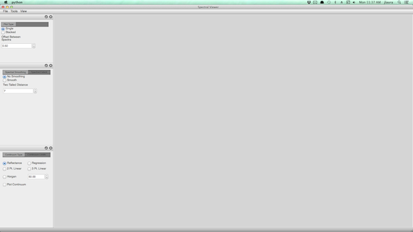
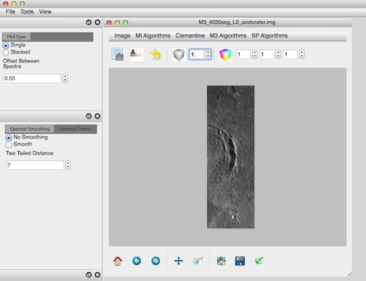
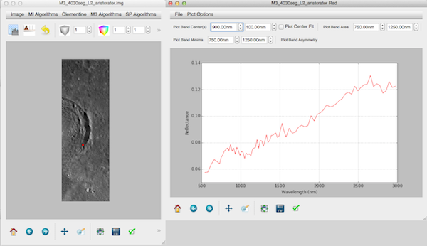
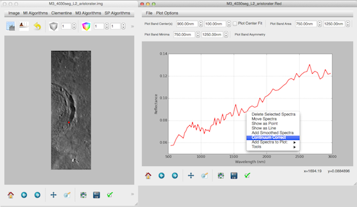
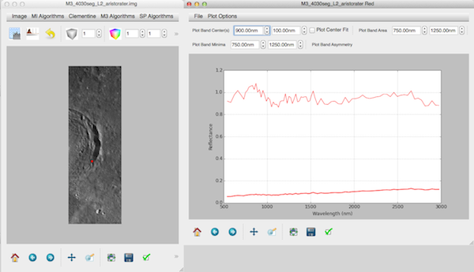

Basic Usage
Whether launched via the command line or the application binary, you should be greated by the PySAT interface, consisting of a number of docked parameter windows and a workspace.

Currently PySAT works natively with M3 data in .img format, Kaguya Spectral Profiler data, and MI data in .cub format. Additionally, a fallback driver, is available that reads any GDAL supported file format.
GDAL Driver
The GDAL driver is naive, and does not support much of the spectral analysis functionality. In fact, it does not even extract wavelength information from the image. The driver is provided to allow you to visualize your data and apply basic image manipulation, e.g., contrast stretching or colorization.
PySAT ships with two methods to interact with data: (1) open a support image file or (2) open a spectra file.
Opening a spectral text file
PySAT expects ASCII spectral files with a header and two columns: (1) wavelength and (2) reflectance or radiance. Future enhancement will support loading multiple spectra and potentially, binary data.
To open an image file, select File > Open Image. If the reader is able to determine the input data type, it will open automatically. Otherwise a dialog will appear asking you to select the imager used to create the product.

PySAT then opens the image and displays a single band, grayscale image. In this case, we see a Level 2 Moon Mineralogy Mapper Image downloaded from the PDS. We will refer to this window, where a map product is shown, as the map plot.

Spectral Analysis
PySAT supports a range of spectral analysis functionality designed to support Exploratory Data Analysis. For supported multi and hyperspectral image formats (not those opened with the default reader) a pixel or spot observation (Spectral Profiler) can be selected and a spectra extracted. We assume that this is an iterative workflow and in depth treatment of a proposed flow is provided later in the documentation.

Here we see a raw reflectance plot color coded to the point in the image. Next, we can select a continuum correction method

and set the end points for linear fitting.

Finally, we select the sectra with a left click, open a contextual menu with a right click, and select continuum correct.

The continuum corrected spectra is automatically added to the plot and can undergo further analysis.

Derived Products
The map plot window is the ‘main’ window to interact with your map data. For this short usage example, we will apply one of algorithms to derive a supplemental product - the olivine index.
Map Projected Data
We are still developing and testing visualization and analysis of map projected data. Feel free to test our software with projected data and please [file an issue](https://github.com/jlaura/pysat/issue/new) if map projected data fails to load.
The map plot window consists of a menu bar, toolbar, plot, and navigation bar (from top to bottom). In the menu bar, many algorithms for creating deried products are provided.

From M3 Algorithms > Derived select Olivine Index. PySAT then applies the algorithm used to derive the olivine index and renders the output in supplemental window. This window can be saved as a .png and added directly to a paper or exported as a geospatially tagged geotiff at full resolution and native data type.